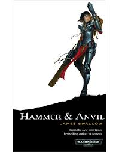

Boek 1: Faith and Fire
Schrijver: James SwallowPublicatiejaar: 2006 Het verhaal: In de grimmige en vreselijke toekomst, het 41ste millenium, staan de heksenjagende fanatiekelingen van de Sisters of Battle tussen de Mensheid en verdoemenis. Van de elite Serafijneen-krijgers tot de gekke Zusters Repentia, ze zijn de sterke arm van de Ecclesiarchie en de brutale heksenhamer. Wanneer de gevaarlijke psychische ketter Torris Vaun ontsnapt, wordt Seraphim Miriya onteerd in de ogen van haar medezusters en superieuren. Miriya volgt het spoor van Vaun naar de planeet Neva, en ze neemt haar zusters mee in de achtervolging en ze start het onderzoek samen met Hospitalier Zuster Verity. Ze onthullen een vreselijk complot dat de toekomst van het Keizerrijk zou kunnen bedreigen, en is het geloof van Miriya en Verity sterk genoeg om te triomferen?
Boek 2: Hammer and Anvil
Schrijver: James SwallowPublicatiejaar: 2011 Het verhaal: De Sister of Battle zijn de meest toegewijde aambidders van de Keizer, woeste krijgers die de zuiverheid van het Keizerrijk prediken en hun vijanden met bolter en flammenwerper geselen. Op een verre wereld werd buitenpost Sanctuary 101 van de Ecclesiarchieweggevaagd door een onverbiddelijke vijand, de onverschrokken en zielloze Necrons. Nu is er een missie van het Zusterschap teruggegaan om de plek opnieuw in te zegenen; maar de metalen nachtmerries liggen nog steeds op de loer in de duisternis en bewaken een geheim dat al voor millenia ligt. Er zal een weerzinwekkende slag gevochten worden ; een die alleen kan eindigen in de totale verdelging van de meedogenloze aliens, of de vernietiging van de trotse Sororitas.